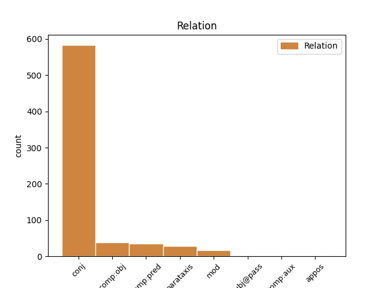
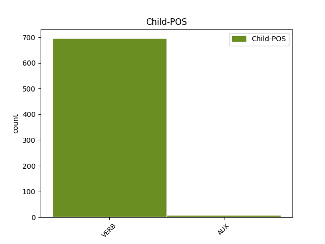

Distribution of features within this leaf


Agreement Rules sorted by frequency.
- When the dependent token is the conjunct(conj) of the head token, and the head token is VERB
1 و _ _ _ _ 0 _ _ _
2 أشار _ _ _ _ 0 _ _ _
3 إلى _ _ _ _ 0 _ _ _
4 الاختلاف _ _ _ _ 0 _ _ _
5 بين _ _ _ _ 0 _ _ _
6 أفغانستان _ _ _ _ 0 _ _ _
7 و _ _ _ _ 0 _ _ _
8 العراق _ _ _ _ 0 _ _ _
9 قائلا _ _ _ _ 0 _ _ _
10 " _ _ _ _ 0 _ _ _
11 إن _ _ _ _ 0 _ _ _
12 أفغانستان _ _ _ _ 0 _ _ _
13 تفتقر _ _ _ _ 0 _ _ _
14 الى _ _ _ _ 0 _ _ _
15 أى _ _ _ _ 0 _ _ _
16 نوع _ _ _ _ 0 _ _ _
17 من _ _ _ _ 0 _ _ _
18 أنواع _ _ _ _ 0 _ _ _
19 البنية _ _ _ _ 0 _ _ _
20 الاساسية _ _ _ _ 0 _ _ _
21 و _ _ _ _ 0 _ _ _
22 هٰذا _ _ _ _ 0 _ _ _
23 هو _ _ _ _ 0 _ _ _
24 سبب _ _ _ _ 0 _ _ _
25 عدم _ _ _ _ 0 _ _ _
26 استطاعة _ _ _ _ 0 _ _ _
27 نا _ _ _ _ 0 _ _ _
28 تنفيذ _ _ _ _ 0 _ _ _
29 أعمال _ _ _ _ 0 _ _ _
30 هناك _ _ _ _ 0 _ _ _
31 . _ _ _ _ 0 _ _ _
32 لكن _ _ _ _ 0 _ _ _
33 فى _ _ _ _ 0 _ _ _
34 العراق _ _ _ _ 0 _ _ _
35 يختلف اِختَلَف VERB VIIA-3MS-- Aspect=Imp|Gender=Masc|Mood=Ind|Number=Sing|Person=3|VerbForm=Fin|Voice=Act 0 _ _ _
36 السيناريو _ _ _ _ 0 _ _ _
37 حيث _ _ _ _ 0 _ _ _
38 لا _ _ _ _ 0 _ _ _
39 يتعين تَعَيَّن VERB VIIA-3MS-- Aspect=Imp|Gender=Masc|Mood=Ind|Number=Sing|Person=3|VerbForm=Fin|Voice=Act 35 conj _ Gloss=be_appointed,be_assigned|LTranslit=taʿayyan|Root=`_y_n|Translit=yataʿayyanu|Vform=يَتَعَيَّنُ
40 علي _ _ _ _ 0 _ _ _
41 نا _ _ _ _ 0 _ _ _
42 انشاء _ _ _ _ 0 _ _ _
43 النية _ _ _ _ 0 _ _ _
44 التحتية _ _ _ _ 0 _ _ _
45 الاساسية _ _ _ _ 0 _ _ _
46 " _ _ _ _ 0 _ _ _
47 . _ _ _ _ 0 _ _ _
1 و _ _ _ _ 0 _ _ _
2 من _ _ _ _ 0 _ _ _
3 العقبات _ _ _ _ 0 _ _ _
4 التي _ _ _ _ 0 _ _ _
5 تواجه _ _ _ _ 0 _ _ _
6 استئناف _ _ _ _ 0 _ _ _
7 الدراسة _ _ _ _ 0 _ _ _
8 ان _ _ _ _ 0 _ _ _
9 المعلمين _ _ _ _ 0 _ _ _
10 لم _ _ _ _ 0 _ _ _
11 يتسلموا _ _ _ _ 0 _ _ _
12 رواتب _ _ _ _ 0 _ _ _
13 هم _ _ _ _ 0 _ _ _
14 الشهرية _ _ _ _ 0 _ _ _
15 و _ _ _ _ 0 _ _ _
16 لا _ _ _ _ 0 _ _ _
17 يعرفون عَرَف VERB VIIA-3MP-- Aspect=Imp|Gender=Masc|Mood=Ind|Number=Plur|Person=3|VerbForm=Fin|Voice=Act 0 _ _ _
18 متى _ _ _ _ 0 _ _ _
19 يتقاضون تَقَاضَى VERB VIIA-3MP-- Aspect=Imp|Gender=Masc|Mood=Ind|Number=Plur|Person=3|VerbForm=Fin|Voice=Act 17 comp:obj _ Gloss=lay_claim_to,litigate|LTranslit=taqāḍā|Root=q_.d_y|Translit=yataqāḍawna|Vform=يَتَقَاضَونَ
20 هذه _ _ _ _ 0 _ _ _
21 الرواتب _ _ _ _ 0 _ _ _
22 رغم _ _ _ _ 0 _ _ _
23 الوعود _ _ _ _ 0 _ _ _
24 الامريكية _ _ _ _ 0 _ _ _
25 ب _ _ _ _ 0 _ _ _
26 دفع _ _ _ _ 0 _ _ _
27 20 _ _ _ _ 0 _ _ _
28 دولارا _ _ _ _ 0 _ _ _
29 ل _ _ _ _ 0 _ _ _
30 كل _ _ _ _ 0 _ _ _
31 موظف _ _ _ _ 0 _ _ _
32 يلتحق _ _ _ _ 0 _ _ _
33 ب _ _ _ _ 0 _ _ _
34 وظيفة _ _ _ _ 0 _ _ _
35 ه _ _ _ _ 0 _ _ _
36 ك _ _ _ _ 0 _ _ _
37 دفعة _ _ _ _ 0 _ _ _
38 طوارئ _ _ _ _ 0 _ _ _
39 . _ _ _ _ 0 _ _ _
1 - _ _ _ _ 0 _ _ _
2 يطالب طَالَب VERB VIIA-3MS-- Aspect=Imp|Gender=Masc|Mood=Ind|Number=Sing|Person=3|VerbForm=Fin|Voice=Act 0 _ _ _
3 مشروع _ _ _ _ 0 _ _ _
4 القرار _ _ _ _ 0 _ _ _
5 الولايات _ _ _ _ 0 _ _ _
6 المتحدة _ _ _ _ 0 _ _ _
7 و _ _ _ _ 0 _ _ _
8 بريطانيا _ _ _ _ 0 _ _ _
9 " _ _ _ _ 0 _ _ _
10 ب _ _ _ _ 0 _ _ _
11 ممارسة _ _ _ _ 0 _ _ _
12 المسؤولية _ _ _ _ 0 _ _ _
13 " _ _ _ _ 0 _ _ _
14 ل _ _ _ _ 0 _ _ _
15 فترة _ _ _ _ 0 _ _ _
16 مبدئية _ _ _ _ 0 _ _ _
17 مدة _ _ _ _ 0 _ _ _
18 ها _ _ _ _ 0 _ _ _
19 12 _ _ _ _ 0 _ _ _
20 شهرا _ _ _ _ 0 _ _ _
21 . _ _ _ _ 0 _ _ _
22 و _ _ _ _ 0 _ _ _
23 تستمر اِستَمَرّ VERB VIIA-3FS-- Aspect=Imp|Gender=Fem|Mood=Ind|Number=Sing|Person=3|VerbForm=Fin|Voice=Act 2 parataxis _ Gloss=continue,last|LTranslit=istamarr|Root=m_r_r|Translit=tastamirru|Vform=تَستَمِرُّ
24 هذه _ _ _ _ 0 _ _ _
25 الولاية _ _ _ _ 0 _ _ _
26 تلقائيا _ _ _ _ 0 _ _ _
27 مالم _ _ _ _ 0 _ _ _
28 يقرر _ _ _ _ 0 _ _ _
29 مجلس _ _ _ _ 0 _ _ _
30 الامن _ _ _ _ 0 _ _ _
31 غير _ _ _ _ 0 _ _ _
32 ذلك _ _ _ _ 0 _ _ _
33 . _ _ _ _ 0 _ _ _
1 و _ _ _ _ 0 _ _ _
2 قال _ _ _ _ 0 _ _ _
3 ماجواير _ _ _ _ 0 _ _ _
4 الذى _ _ _ _ 0 _ _ _
5 كان _ _ _ _ 0 _ _ _
6 يسير _ _ _ _ 0 _ _ _
7 عبر _ _ _ _ 0 _ _ _
8 القرية _ _ _ _ 0 _ _ _
9 الهادئة _ _ _ _ 0 _ _ _
10 أن _ _ _ _ 0 _ _ _
11 ه _ _ _ _ 0 _ _ _
12 أعجب _ _ _ _ 0 _ _ _
13 ب _ _ _ _ 0 _ _ _
14 تعاون _ _ _ _ 0 _ _ _
15 القرويين _ _ _ _ 0 _ _ _
16 الجيد _ _ _ _ 0 _ _ _
17 مع _ _ _ _ 0 _ _ _
18 النظام _ _ _ _ 0 _ _ _
19 " _ _ _ _ 0 _ _ _
20 . _ _ _ _ 0 _ _ _
21 و _ _ _ _ 0 _ _ _
22 أضاف _ _ _ _ 0 _ _ _
23 " _ _ _ _ 0 _ _ _
24 إن _ _ _ _ 0 _ _ _
25 ها _ _ _ _ 0 _ _ _
26 المسئولية _ _ _ _ 0 _ _ _
27 الشخصية _ _ _ _ 0 _ _ _
28 التى _ _ _ _ 0 _ _ _
29 تجعل جَعَل VERB VIIA-3FS-- Aspect=Imp|Gender=Fem|Mood=Ind|Number=Sing|Person=3|VerbForm=Fin|Voice=Act 0 _ _ _
30 النظام _ _ _ _ 0 _ _ _
31 يعمل عَمِل VERB VIIA-3MS-- Aspect=Imp|Gender=Masc|Mood=Ind|Number=Sing|Person=3|VerbForm=Fin|Voice=Act 29 comp:pred _ Gloss=act,function,work|LTranslit=ʿamil|Root=`_m_l|Translit=yaʿmalu|Vform=يَعمَلُ
32 " _ _ _ _ 0 _ _ _
33 . _ _ _ _ 0 _ _ _
1 و _ _ _ _ 0 _ _ _
2 يسير _ _ _ _ 0 _ _ _
3 تطبيق _ _ _ _ 0 _ _ _
4 نظام _ _ _ _ 0 _ _ _
5 الحصص _ _ _ _ 0 _ _ _
6 الزراعية _ _ _ _ 0 _ _ _
7 على _ _ _ _ 0 _ _ _
8 أسواق _ _ _ _ 0 _ _ _
9 الدول _ _ _ _ 0 _ _ _
10 الجديدة _ _ _ _ 0 _ _ _
11 ، _ _ _ _ 0 _ _ _
12 لافتاً _ _ _ _ 0 _ _ _
13 إلى _ _ _ _ 0 _ _ _
14 أن _ _ _ _ 0 _ _ _
15 ه _ _ _ _ 0 _ _ _
16 ب _ _ _ _ 0 _ _ _
17 الإمكان _ _ _ _ 0 _ _ _
18 التفاوض _ _ _ _ 0 _ _ _
19 مع _ _ _ _ 0 _ _ _
20 الاتحاد _ _ _ _ 0 _ _ _
21 الأوروبي _ _ _ _ 0 _ _ _
22 ل _ _ _ _ 0 _ _ _
23 زيادة _ _ _ _ 0 _ _ _
24 حجم _ _ _ _ 0 _ _ _
25 تلك _ _ _ _ 0 _ _ _
26 الحصص _ _ _ _ 0 _ _ _
27 الزراعية _ _ _ _ 0 _ _ _
28 ب _ _ _ _ 0 _ _ _
29 ما _ _ _ _ 0 _ _ _
30 يتسق اِتَّسَق VERB VIIA-3MS-- Aspect=Imp|Gender=Masc|Mood=Ind|Number=Sing|Person=3|VerbForm=Fin|Voice=Act 0 _ _ _
31 مع _ _ _ _ 0 _ _ _
32 حقيقة _ _ _ _ 0 _ _ _
33 انضمام _ _ _ _ 0 _ _ _
34 عشر _ _ _ _ 0 _ _ _
35 دول _ _ _ _ 0 _ _ _
36 جديدة _ _ _ _ 0 _ _ _
37 إلي _ _ _ _ 0 _ _ _
38 ه _ _ _ _ 0 _ _ _
39 ، _ _ _ _ 0 _ _ _
40 خاصة _ _ _ _ 0 _ _ _
41 أن _ _ _ _ 0 _ _ _
42 اتفاقية _ _ _ _ 0 _ _ _
43 المشاركة _ _ _ _ 0 _ _ _
44 المصرية _ _ _ _ 0 _ _ _
45 الأوروبية _ _ _ _ 0 _ _ _
46 تنص نَصّ VERB VIIA-3FS-- Aspect=Imp|Gender=Fem|Mood=Ind|Number=Sing|Person=3|VerbForm=Fin|Voice=Act 30 mod _ Gloss=specify,stipulate|LTranslit=naṣṣ|Root=n_.s_.s|Translit=tanuṣṣu|Vform=تَنُصُّ
47 على _ _ _ _ 0 _ _ _
48 إجراء _ _ _ _ 0 _ _ _
49 مراجعة _ _ _ _ 0 _ _ _
50 مستمرة _ _ _ _ 0 _ _ _
51 ل _ _ _ _ 0 _ _ _
52 تلك _ _ _ _ 0 _ _ _
53 المزايا _ _ _ _ 0 _ _ _
54 كل _ _ _ _ 0 _ _ _
55 ثلاث _ _ _ _ 0 _ _ _
56 سنوات _ _ _ _ 0 _ _ _
57 . _ _ _ _ 0 _ _ _
1 وقعت _ _ _ _ 0 _ _ _
2 إحدى _ _ _ _ 0 _ _ _
3 الشركات _ _ _ _ 0 _ _ _
4 المصرية _ _ _ _ 0 _ _ _
5 العاملة _ _ _ _ 0 _ _ _
6 في _ _ _ _ 0 _ _ _
7 مجال _ _ _ _ 0 _ _ _
8 تكنولوجيا _ _ _ _ 0 _ _ _
9 المعلومات _ _ _ _ 0 _ _ _
10 اتفاقية _ _ _ _ 0 _ _ _
11 شراكة _ _ _ _ 0 _ _ _
12 مع _ _ _ _ 0 _ _ _
13 شركة _ _ _ _ 0 _ _ _
14 هندية _ _ _ _ 0 _ _ _
15 كبرى _ _ _ _ 0 _ _ _
16 تعمل _ _ _ _ 0 _ _ _
17 في _ _ _ _ 0 _ _ _
18 مجال _ _ _ _ 0 _ _ _
19 وضع _ _ _ _ 0 _ _ _
20 الحلول _ _ _ _ 0 _ _ _
21 الخاصة _ _ _ _ 0 _ _ _
22 ب _ _ _ _ 0 _ _ _
23 القطاع _ _ _ _ 0 _ _ _
24 المصرفي _ _ _ _ 0 _ _ _
25 تكون كَان AUX VIIA-3FS-- Aspect=Imp|Gender=Fem|Mood=Ind|Number=Sing|Person=3|VerbForm=Fin|Voice=Act 0 _ _ _
26 الشركة _ _ _ _ 0 _ _ _
27 المصرية _ _ _ _ 0 _ _ _
28 ممثلة _ _ _ _ 0 _ _ _
29 ل _ _ _ _ 0 _ _ _
30 ها _ _ _ _ 0 _ _ _
31 في _ _ _ _ 0 _ _ _
32 مصر _ _ _ _ 0 _ _ _
33 و _ _ _ _ 0 _ _ _
34 تسوق سَوَّق VERB VIIA-3FS-- Aspect=Imp|Gender=Fem|Mood=Ind|Number=Sing|Person=3|VerbForm=Fin|Voice=Act 25 conj _ Gloss=market|LTranslit=sawwaq|Root=s_w_q|Translit=tusawwiqu|Vform=تُسَوِّقُ
35 حلول _ _ _ _ 0 _ _ _
36 ها _ _ _ _ 0 _ _ _
37 محليا _ _ _ _ 0 _ _ _
38 و _ _ _ _ 0 _ _ _
39 في _ _ _ _ 0 _ _ _
40 البلدان _ _ _ _ 0 _ _ _
41 التي _ _ _ _ 0 _ _ _
42 توجد _ _ _ _ 0 _ _ _
43 ب _ _ _ _ 0 _ _ _
44 ها _ _ _ _ 0 _ _ _
45 استثمارات _ _ _ _ 0 _ _ _
46 في _ _ _ _ 0 _ _ _
47 هذا _ _ _ _ 0 _ _ _
48 المجال _ _ _ _ 0 _ _ _
49 . _ _ _ _ 0 _ _ _
1 أكدت _ _ _ _ 0 _ _ _
2 الحكومة _ _ _ _ 0 _ _ _
3 المصرية _ _ _ _ 0 _ _ _
4 أن _ _ _ _ 0 _ _ _
5 ها _ _ _ _ 0 _ _ _
6 لا _ _ _ _ 0 _ _ _
7 تنوي نَوَى VERB VIIA-3FS-- Aspect=Imp|Gender=Fem|Mood=Ind|Number=Sing|Person=3|VerbForm=Fin|Voice=Act 0 _ _ _
8 تصفية _ _ _ _ 0 _ _ _
9 » _ _ _ _ 0 _ _ _
10 شركة _ _ _ _ 0 _ _ _
11 الحديد _ _ _ _ 0 _ _ _
12 و _ _ _ _ 0 _ _ _
13 الصلب _ _ _ _ 0 _ _ _
14 « _ _ _ _ 0 _ _ _
15 نظراً _ _ _ _ 0 _ _ _
16 ل _ _ _ _ 0 _ _ _
17 وضع _ _ _ _ 0 _ _ _
18 ها _ _ _ _ 0 _ _ _
19 الاستراتيجي _ _ _ _ 0 _ _ _
20 ، _ _ _ _ 0 _ _ _
21 إذ _ _ _ _ 0 _ _ _
22 تتعامل تَعَامَل VERB VIIA-3FS-- Aspect=Imp|Gender=Fem|Mood=Ind|Number=Sing|Person=3|VerbForm=Fin|Voice=Act 7 appos _ Gloss=deal_with,do_business_with|LTranslit=taʿāmal|Root=`_m_l|Translit=tataʿāmalu|Vform=تَتَعَامَلُ
23 مع _ _ _ _ 0 _ _ _
24 700 _ _ _ _ 0 _ _ _
25 مصنع _ _ _ _ 0 _ _ _
26 أبرز _ _ _ _ 0 _ _ _
27 ها _ _ _ _ 0 _ _ _
28 » _ _ _ _ 0 _ _ _
29 شركة _ _ _ _ 0 _ _ _
30 الكوك _ _ _ _ 0 _ _ _
31 « _ _ _ _ 0 _ _ _
32 التي _ _ _ _ 0 _ _ _
33 تنتج _ _ _ _ 0 _ _ _
34 فحم _ _ _ _ 0 _ _ _
35 الكوك _ _ _ _ 0 _ _ _
36 . _ _ _ _ 0 _ _ _
1 المناقشون _ _ _ _ 0 _ _ _
2 ب _ _ _ _ 0 _ _ _
3 الوقائع _ _ _ _ 0 _ _ _
4 و _ _ _ _ 0 _ _ _
5 الأرقام _ _ _ _ 0 _ _ _
6 ينطلقون _ _ _ _ 0 _ _ _
7 من _ _ _ _ 0 _ _ _
8 مقدمات _ _ _ _ 0 _ _ _
9 بسيطة _ _ _ _ 0 _ _ _
10 و _ _ _ _ 0 _ _ _
11 . _ _ _ _ 0 _ _ _
12 . _ _ _ _ 0 _ _ _
13 . _ _ _ _ 0 _ _ _
14 صحيحة _ _ _ _ 0 _ _ _
15 : _ _ _ _ 0 _ _ _
16 المطلوب _ _ _ _ 0 _ _ _
17 بناء _ _ _ _ 0 _ _ _
18 دولة _ _ _ _ 0 _ _ _
19 ذات _ _ _ _ 0 _ _ _
20 سيادة _ _ _ _ 0 _ _ _
21 . _ _ _ _ 0 _ _ _
22 تحرير _ _ _ _ 0 _ _ _
23 الأرض _ _ _ _ 0 _ _ _
24 التي _ _ _ _ 0 _ _ _
25 يُعرف عَرَف VERB VIIP-3MS-- Aspect=Imp|Gender=Masc|Mood=Ind|Number=Sing|Person=3|VerbForm=Fin|Voice=Pass 0 _ _ _
26 متى _ _ _ _ 0 _ _ _
27 يكتمل اِكتَمَل VERB VIIA-3MS-- Aspect=Imp|Gender=Masc|Mood=Ind|Number=Sing|Person=3|VerbForm=Fin|Voice=Act 25 subj@pass _ Gloss=be_completed,be_integral,be_perfect|LTranslit=iktamal|Root=k_m_l|Translit=yaktamilu|Vform=يَكتَمِلُ
28 تحرير _ _ _ _ 0 _ _ _
29 ها _ _ _ _ 0 _ _ _
30 ، _ _ _ _ 0 _ _ _
31 و _ _ _ _ 0 _ _ _
32 المبادرة _ _ _ _ 0 _ _ _
33 سريعاً _ _ _ _ 0 _ _ _
34 الى _ _ _ _ 0 _ _ _
35 نشر _ _ _ _ 0 _ _ _
36 السلطة _ _ _ _ 0 _ _ _
37 فوق _ _ _ _ 0 _ _ _
38 ها _ _ _ _ 0 _ _ _
39 و _ _ _ _ 0 _ _ _
40 ربط _ _ _ _ 0 _ _ _
41 ها _ _ _ _ 0 _ _ _
42 ب _ _ _ _ 0 _ _ _
43 المركز _ _ _ _ 0 _ _ _
44 . _ _ _ _ 0 _ _ _
45 التطبيع _ _ _ _ 0 _ _ _
46 ب _ _ _ _ 0 _ _ _
47 أسرع _ _ _ _ 0 _ _ _
48 وقت _ _ _ _ 0 _ _ _
49 ممكن _ _ _ _ 0 _ _ _
50 مع _ _ _ _ 0 _ _ _
51 الحياة _ _ _ _ 0 _ _ _
52 العادية _ _ _ _ 0 _ _ _
53 و _ _ _ _ 0 _ _ _
54 تفكيك _ _ _ _ 0 _ _ _
55 ظاهرات _ _ _ _ 0 _ _ _
56 السلاح _ _ _ _ 0 _ _ _
57 و _ _ _ _ 0 _ _ _
58 التعبئة _ _ _ _ 0 _ _ _
59 . _ _ _ _ 0 _ _ _
60 الانصراف _ _ _ _ 0 _ _ _
61 الى _ _ _ _ 0 _ _ _
62 تحسين _ _ _ _ 0 _ _ _
63 الاقتصاد _ _ _ _ 0 _ _ _
64 و _ _ _ _ 0 _ _ _
65 التعليم _ _ _ _ 0 _ _ _
66 و _ _ _ _ 0 _ _ _
67 الطبابة _ _ _ _ 0 _ _ _
68 و _ _ _ _ 0 _ _ _
69 المؤسسات _ _ _ _ 0 _ _ _
70 على _ _ _ _ 0 _ _ _
71 أنواع _ _ _ _ 0 _ _ _
72 ها _ _ _ _ 0 _ _ _
73 . _ _ _ _ 0 _ _ _
Disagree Examples:
1 و _ _ _ _ 0 _ _ _
2 تخشى خَشِي VERB VIIA-3FS-- Aspect=Imp|Gender=Fem|Mood=Ind|Number=Sing|Person=3|VerbForm=Fin|Voice=Act 0 _ _ _
3 السلطات _ _ _ _ 0 _ _ _
4 من _ _ _ _ 0 _ _ _
5 ارتفاع _ _ _ _ 0 _ _ _
6 عدد _ _ _ _ 0 _ _ _
7 الضحايا _ _ _ _ 0 _ _ _
8 اذ _ _ _ _ 0 _ _ _
9 ان _ _ _ _ 0 _ _ _
10 رجال _ _ _ _ 0 _ _ _
11 الاسعاف _ _ _ _ 0 _ _ _
12 الذين _ _ _ _ 0 _ _ _
13 ارسلوا _ _ _ _ 0 _ _ _
14 الى _ _ _ _ 0 _ _ _
15 مكان _ _ _ _ 0 _ _ _
16 الكارثة _ _ _ _ 0 _ _ _
17 و _ _ _ _ 0 _ _ _
18 عدد _ _ _ _ 0 _ _ _
19 هم _ _ _ _ 0 _ _ _
20 يزيد _ _ _ _ 0 _ _ _
21 عن _ _ _ _ 0 _ _ _
22 المائة _ _ _ _ 0 _ _ _
23 ، _ _ _ _ 0 _ _ _
24 لم _ _ _ _ 0 _ _ _
25 يتمكنوا تَمَكَّن VERB VIJA-3MP-- Aspect=Imp|Gender=Masc|Mood=Jus|Number=Plur|Person=3|VerbForm=Fin|Voice=Act 2 conj _ Gloss=be_able_to,be_capable_of|LTranslit=tamakkan|Root=m_k_n|Translit=yatamakkanū|Vform=يَتَمَكَّنُوا
26 عند _ _ _ _ 0 _ _ _
27 منتصف _ _ _ _ 0 _ _ _
28 النهار _ _ _ _ 0 _ _ _
29 امس _ _ _ _ 0 _ _ _
30 الا _ _ _ _ 0 _ _ _
31 من _ _ _ _ 0 _ _ _
32 تمشيط _ _ _ _ 0 _ _ _
33 ربع _ _ _ _ 0 _ _ _
34 المخيم _ _ _ _ 0 _ _ _
35 بحثا _ _ _ _ 0 _ _ _
36 عن _ _ _ _ 0 _ _ _
37 الضحايا _ _ _ _ 0 _ _ _
38 بين _ _ _ _ 0 _ _ _
39 الانقاض _ _ _ _ 0 _ _ _
40 . _ _ _ _ 0 _ _ _
1 و _ _ _ _ 0 _ _ _
2 قال _ _ _ _ 0 _ _ _
3 باراك _ _ _ _ 0 _ _ _
4 الذي _ _ _ _ 0 _ _ _
5 يمضى _ _ _ _ 0 _ _ _
6 حاليا _ _ _ _ 0 _ _ _
7 اجازة _ _ _ _ 0 _ _ _
8 فى _ _ _ _ 0 _ _ _
9 شمال _ _ _ _ 0 _ _ _
10 اسرائيل _ _ _ _ 0 _ _ _
11 ان _ _ _ _ 0 _ _ _
12 الدولة _ _ _ _ 0 _ _ _
13 العبرية _ _ _ _ 0 _ _ _
14 لم _ _ _ _ 0 _ _ _
15 تكن كَان VERB VIJA-3FS-- Aspect=Imp|Gender=Fem|Mood=Jus|Number=Sing|Person=3|VerbForm=Fin|Voice=Act 0 _ _ _
16 تسمح سَمَح VERB VIIA-3FS-- Aspect=Imp|Gender=Fem|Mood=Ind|Number=Sing|Person=3|VerbForm=Fin|Voice=Act 15 comp:pred _ Gloss=allow,authorize,permit|LTranslit=samaḥ|Root=s_m_.h|Translit=tasmaḥu|Vform=تَسمَحُ
17 حتى _ _ _ _ 0 _ _ _
18 الان _ _ _ _ 0 _ _ _
19 ب _ _ _ _ 0 _ _ _
20 مثل _ _ _ _ 0 _ _ _
21 هذه _ _ _ _ 0 _ _ _
22 اللقاءات _ _ _ _ 0 _ _ _
23 في _ _ _ _ 0 _ _ _
24 المنطقة _ _ _ _ 0 _ _ _
25 التى _ _ _ _ 0 _ _ _
26 تعتبر _ _ _ _ 0 _ _ _
27 ها _ _ _ _ 0 _ _ _
28 " _ _ _ _ 0 _ _ _
29 منطقة _ _ _ _ 0 _ _ _
30 عسكرية _ _ _ _ 0 _ _ _
31 مقفلة _ _ _ _ 0 _ _ _
32 " _ _ _ _ 0 _ _ _
33 . _ _ _ _ 0 _ _ _
1 و _ _ _ _ 0 _ _ _
2 لم _ _ _ _ 0 _ _ _
3 يعد عَاد VERB VIJA-3MS-- Aspect=Imp|Gender=Masc|Mood=Jus|Number=Sing|Person=3|VerbForm=Fin|Voice=Act 0 _ _ _
4 يتقبل تَقَبَّل VERB VIIA-3MS-- Aspect=Imp|Gender=Masc|Mood=Ind|Number=Sing|Person=3|VerbForm=Fin|Voice=Act 3 comp:pred _ Gloss=accept,receive|LTranslit=taqabbal|Root=q_b_l|Translit=yataqabbalu|Vform=يَتَقَبَّلُ
5 اللاعبون _ _ _ _ 0 _ _ _
6 انتقاد _ _ _ _ 0 _ _ _
7 تسوبيل _ _ _ _ 0 _ _ _
8 ل _ _ _ _ 0 _ _ _
9 هم _ _ _ _ 0 _ _ _
10 خصوصا _ _ _ _ 0 _ _ _
11 بعدما _ _ _ _ 0 _ _ _
12 غلبت _ _ _ _ 0 _ _ _
13 العصبية _ _ _ _ 0 _ _ _
14 على _ _ _ _ 0 _ _ _
15 تصرفات _ _ _ _ 0 _ _ _
16 ه _ _ _ _ 0 _ _ _
17 و _ _ _ _ 0 _ _ _
18 كانت _ _ _ _ 0 _ _ _
19 سببا _ _ _ _ 0 _ _ _
20 في _ _ _ _ 0 _ _ _
21 توقيع _ _ _ _ 0 _ _ _
22 العقوبات _ _ _ _ 0 _ _ _
23 علي _ _ _ _ 0 _ _ _
24 ه _ _ _ _ 0 _ _ _
25 محليا _ _ _ _ 0 _ _ _
26 و _ _ _ _ 0 _ _ _
27 أفريقيا _ _ _ _ 0 _ _ _
28 اكثر _ _ _ _ 0 _ _ _
29 من _ _ _ _ 0 _ _ _
30 مرة _ _ _ _ 0 _ _ _
31 . _ _ _ _ 0 _ _ _
1 و _ _ _ _ 0 _ _ _
2 يقول _ _ _ _ 0 _ _ _
3 افينتاخادو _ _ _ _ 0 _ _ _
4 " _ _ _ _ 0 _ _ _
5 اقوم _ _ _ _ 0 _ _ _
6 ب _ _ _ _ 0 _ _ _
7 جهود _ _ _ _ 0 _ _ _
8 مضاعفة _ _ _ _ 0 _ _ _
9 في _ _ _ _ 0 _ _ _
10 محاولة _ _ _ _ 0 _ _ _
11 ل _ _ _ _ 0 _ _ _
12 إنهاء _ _ _ _ 0 _ _ _
13 مسألة _ _ _ _ 0 _ _ _
14 الرهائن _ _ _ _ 0 _ _ _
15 قبل _ _ _ _ 0 _ _ _
16 انطلاق _ _ _ _ 0 _ _ _
17 الالعاب _ _ _ _ 0 _ _ _
18 " _ _ _ _ 0 _ _ _
19 ، _ _ _ _ 0 _ _ _
20 و _ _ _ _ 0 _ _ _
21 أضاف _ _ _ _ 0 _ _ _
22 " _ _ _ _ 0 _ _ _
23 لم _ _ _ _ 0 _ _ _
24 تحرز أَحرَز VERB VIJA-3FS-- Aspect=Imp|Gender=Fem|Mood=Jus|Number=Sing|Person=3|VerbForm=Fin|Voice=Act 0 _ _ _
25 الفيليبين _ _ _ _ 0 _ _ _
26 اي _ _ _ _ 0 _ _ _
27 ميدالية _ _ _ _ 0 _ _ _
28 ذهبية _ _ _ _ 0 _ _ _
29 حتى _ _ _ _ 0 _ _ _
30 الان _ _ _ _ 0 _ _ _
31 في _ _ _ _ 0 _ _ _
32 تاريخ _ _ _ _ 0 _ _ _
33 الالعاب _ _ _ _ 0 _ _ _
34 الاولمبية _ _ _ _ 0 _ _ _
35 ، _ _ _ _ 0 _ _ _
36 و _ _ _ _ 0 _ _ _
37 أحلم حَلَم VERB VIIA-1MS-- Aspect=Imp|Gender=Masc|Mood=Ind|Number=Sing|Person=1|VerbForm=Fin|Voice=Act 24 conj _ Gloss=dream|LTranslit=ḥalam|Root=.h_l_m|Translit=ʾaḥlumu|Vform=أَحلُمُ
38 ب _ _ _ _ 0 _ _ _
39 تحقيق _ _ _ _ 0 _ _ _
40 ذلك _ _ _ _ 0 _ _ _
41 في _ _ _ _ 0 _ _ _
42 سيدني _ _ _ _ 0 _ _ _
43 " _ _ _ _ 0 _ _ _
44 . _ _ _ _ 0 _ _ _
1 و _ _ _ _ 0 _ _ _
2 أوضح _ _ _ _ 0 _ _ _
3 ان _ _ _ _ 0 _ _ _
4 رئيس _ _ _ _ 0 _ _ _
5 الوزراء _ _ _ _ 0 _ _ _
6 " _ _ _ _ 0 _ _ _
7 لم _ _ _ _ 0 _ _ _
8 يكن كَان VERB VIJA-3MS-- Aspect=Imp|Gender=Masc|Mood=Jus|Number=Sing|Person=3|VerbForm=Fin|Voice=Act 0 _ _ _
9 يملك مَلَك VERB VIIA-3MS-- Aspect=Imp|Gender=Masc|Mood=Ind|Number=Sing|Person=3|VerbForm=Fin|Voice=Act 8 comp:pred _ Gloss=control,have,hold|LTranslit=malak|Root=m_l_k|Translit=yamliku|Vform=يَملِكُ
10 الحق _ _ _ _ 0 _ _ _
11 في _ _ _ _ 0 _ _ _
12 التخلي _ _ _ _ 0 _ _ _
13 عن _ _ _ _ 0 _ _ _
14 القدس _ _ _ _ 0 _ _ _
15 التي _ _ _ _ 0 _ _ _
16 ورث _ _ _ _ 0 _ _ _
17 ها _ _ _ _ 0 _ _ _
18 الشعب _ _ _ _ 0 _ _ _
19 اليهودي _ _ _ _ 0 _ _ _
20 " _ _ _ _ 0 _ _ _
21 مضيفا _ _ _ _ 0 _ _ _
22 " _ _ _ _ 0 _ _ _
23 ف _ _ _ _ 0 _ _ _
24 هو _ _ _ _ 0 _ _ _
25 لا _ _ _ _ 0 _ _ _
26 يتمتع _ _ _ _ 0 _ _ _
27 ب _ _ _ _ 0 _ _ _
28 ائتلاف _ _ _ _ 0 _ _ _
29 حكومي _ _ _ _ 0 _ _ _
30 و _ _ _ _ 0 _ _ _
31 لا _ _ _ _ 0 _ _ _
32 ب _ _ _ _ 0 _ _ _
33 غالبية _ _ _ _ 0 _ _ _
34 في _ _ _ _ 0 _ _ _
35 البرلمان _ _ _ _ 0 _ _ _
36 و _ _ _ _ 0 _ _ _
37 لا _ _ _ _ 0 _ _ _
38 حتى _ _ _ _ 0 _ _ _
39 دعم _ _ _ _ 0 _ _ _
40 السكان _ _ _ _ 0 _ _ _
41 " _ _ _ _ 0 _ _ _
42 . _ _ _ _ 0 _ _ _